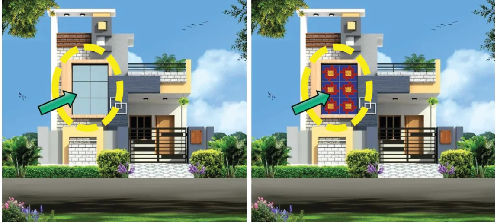
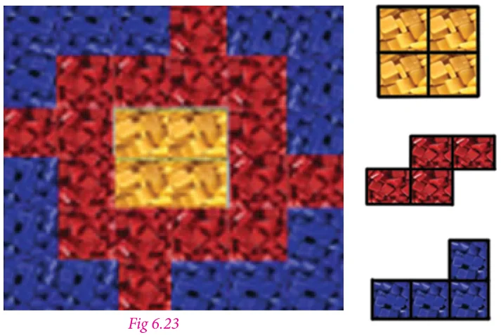
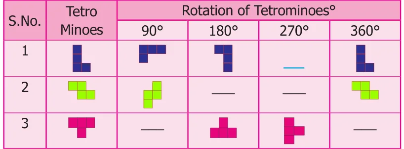
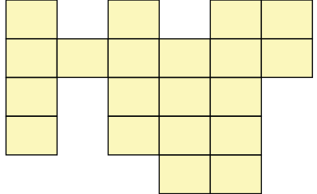
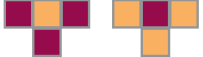
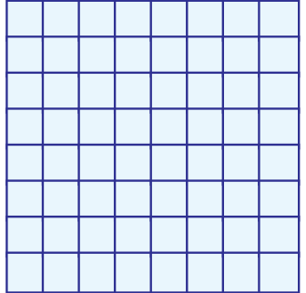
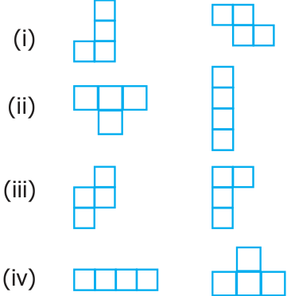
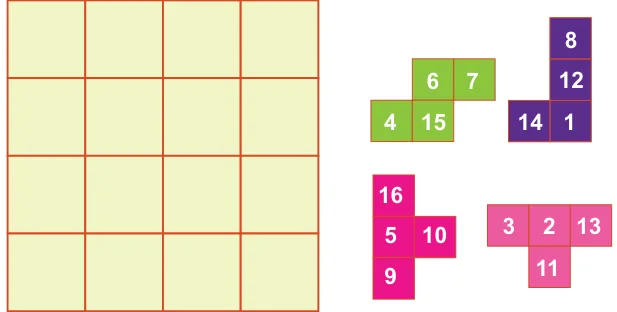

- If the cost of a square tile is ₹52 then what will be the cost of the tiles that
Raghavan buys for the front elevation? (see Fig. 6.22)

Solution
- In one tile there are

\(= 1\) tetromino
\(= 4\) tetrominoes
\(= 4\) tetrominoes
Therefore, there are nine tetrominoes in a tile.
- Given, the cost of a tile is ₹52
There are six tiles in the front elevation Therefore, the total cost \(= 6 \times 52 =\) ₹312
- A tetromino is a shape obtained by …………………. squares together.
- Draw a tetromino which passes symmetry ……………..
- Complete the table

- Shade the figure completely, by using five Tetromino shapes only once.

- Using the given Tetromino shaded in two different ways ( ), fill the

grid in such a way that, no two adjacent boxes have the same colour.

- Match the tetrominoes of same type.

- Using the given tetrominoes with numbers, complete the 4 x 4 magic square .
